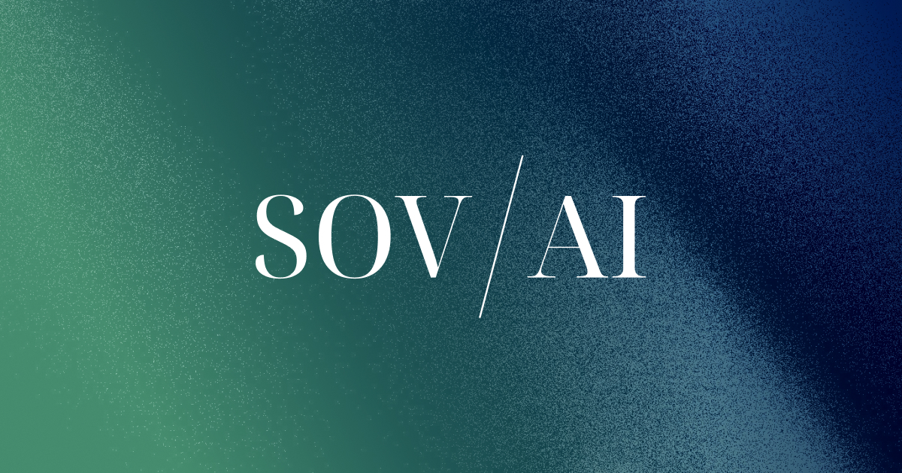

UK Sovereign AI Fund: Callosum and 3 million GPU hours move into execution
The official 16 April 2026 update moves from policy language to deployment: the UK Sovereign AI Fund confirms its first investment in Callosum and allocates over 3 million GPU hours to six startups through the AI Research Resource.

1. What is officially announced
The fund confirms its first equity investment in Callosum, a startup working on AI-enabled drug discovery. In parallel, six UK companies receive major compute access through the AI Research Resource, with use cases spanning biotech, advanced research models, and applied AI scale-up.
2. Why this matters for sovereign AI
The signal is more concrete than a funding announcement: sovereign AI becomes operational when capital, GPU capacity, and industrial priorities are connected in one mechanism. The UK is showing how a sovereign fund can become a practical allocation engine.
3. Operational takeaway for organizations
For European companies, the lesson is direct: a sovereign AI program should identify strategic workloads, reserve verifiable compute, and back the teams that control critical intellectual property. Without that full chain, sovereignty remains mostly declarative.
Assess critical AI projects through three lenses: compute dependency, intellectual property control, and the ability to scale without losing governance.
Start scoping